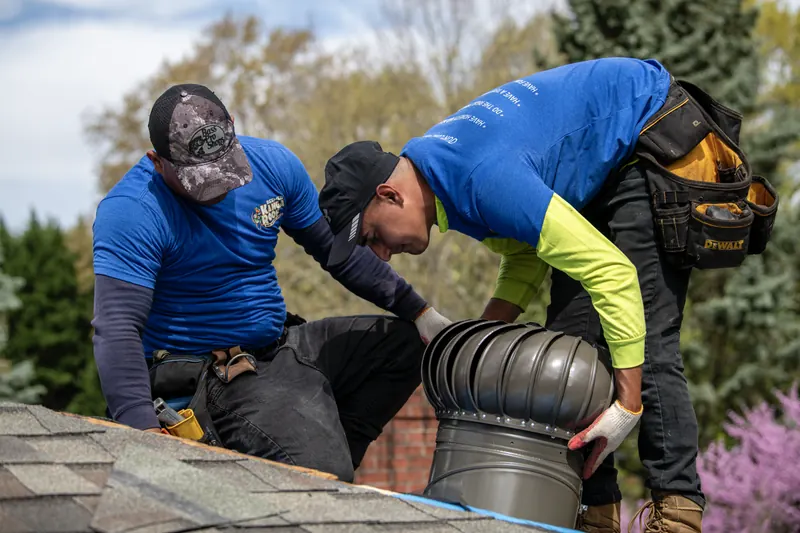
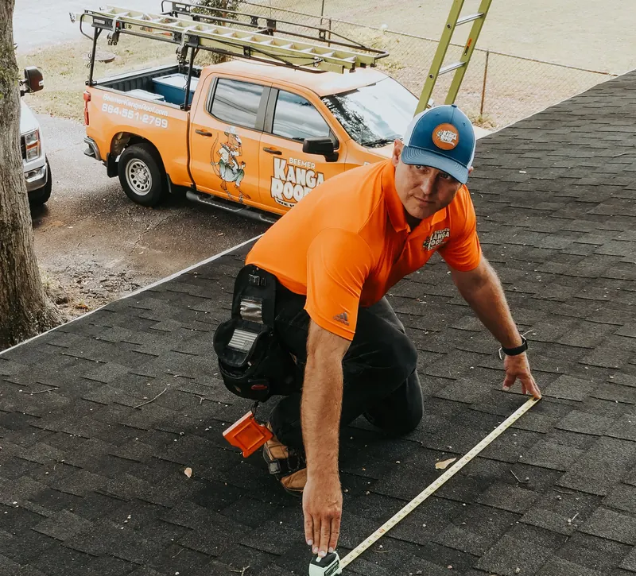

Emergency roof repair for leaks and sudden issues
Spartanburg’s frequent storms and high winds make fast action essential to prevent interior damage. We respond quickly to locate the source and stop water intrusion.
When your roof in Spartanburg starts leaking, loses shingles, or takes storm damage, you need a roofing team you can trust. We deliver long-lasting solutions designed for Upstate SC weather.
Call for a free inspection(864) 412-2573
Spartanburg’s frequent storms and high winds make fast action essential to prevent interior damage. We respond quickly to locate the source and stop water intrusion.
When repairs are no longer enough, we install durable, high-performing roofs designed to withstand Spartanburg’s storms, humidity, and heat.
Wind and hail are among the most common causes of roof damage in Spartanburg. We provide the photos and documentation you need for the insurance process.
We evaluate shingles, flashing, gutters, ventilation, and attic conditions to identify issues early.

We respond quickly, communicate clearly, and guide you through the next steps so you never feel left in the dark.
Every inspection is free, with photos of what we find. If you’re unsure whether we serve your area, just give us a call.
Call for a free inspection(864) 412-2573